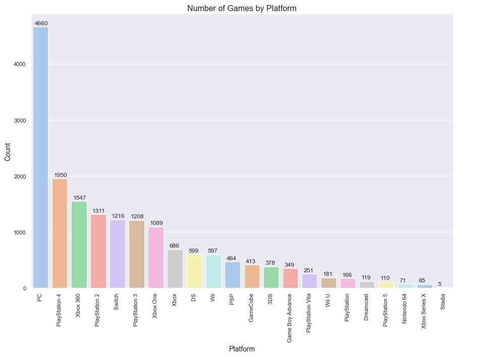
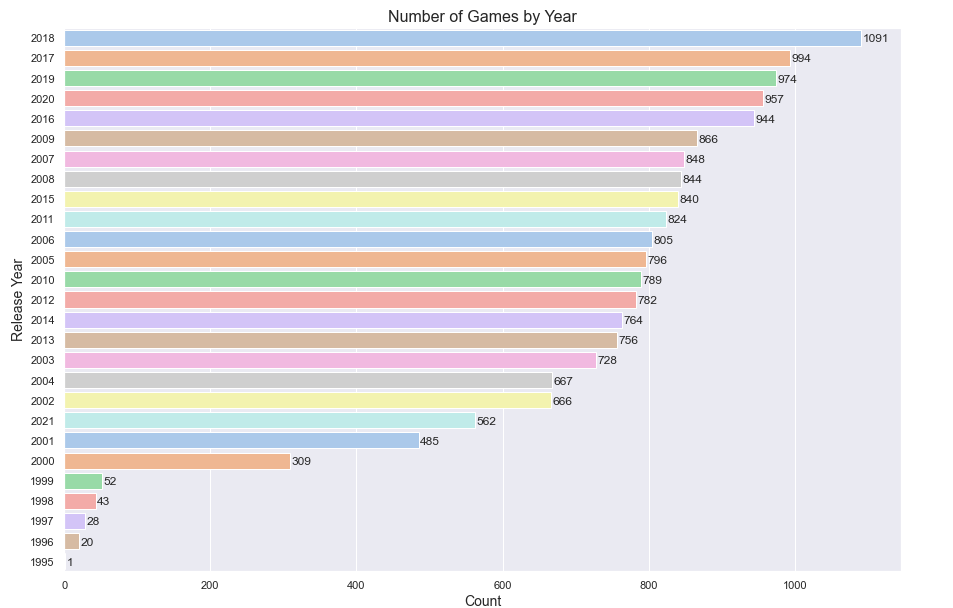

Video Games Analysis Project
Exploring a Dataset of Video Games and their Rankings
In this project, I have explored a dataset relating to video games and their score metrics.
Whole Project
Just Code
Checking for and dealing with null data

Top 10 Video Games by Meta Score

Distribution of Meta Scores

Top 10 Video Games by User Review

Distribution of User Review Scores
Number of Video Games by Platform

Number of Video Games by Release Year

Number of Video Games by Release Month